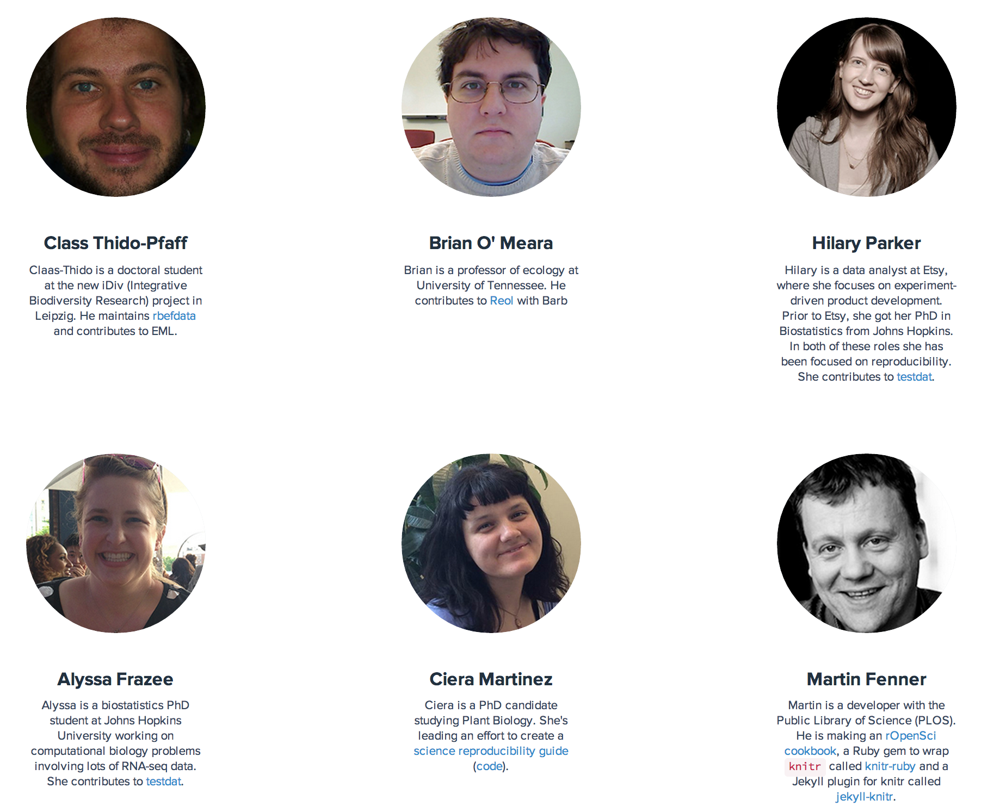

Open science and R
Scott Chamberlain (@sckottie/@ropensci)
UC Berkeley / rOpenSci


scotttalks.info/ossps
LICENSE: CC-BY 4.0
open science
open science is badly needed
Retractions

science should be reproducible!
Emergent findings
e.g., data
Open science as a toolbelt
open science may be hard to do
but - work on components
and - individual components are worth learning
Versioning: code/data/text
failure proofs your work
experiment freely!
Do all work programatically
Key to reproduciblity
Most important person that wants to reproduce your work is you!
you and yourself
one week from now
two months from now
important scientific programming languages


Jupyter Notebooks

reproducing a Jupyter notebook
R language
used widely in biology, psychology, medicine, etc.
rapidly growing user base, companies surrounding it
includes all tools for open science workflow
though work to be done ...
Open science ecosytsem

rOpenSci does:
rOpenSci origin
formed from ad-hoc conversation over blogs/Twitter
by the need to make research easier/more reproducible
now worldwide community
rOpenSci Staff
ropensci.org/about/#staff4 full time
now including a community manager!
leadership team
advisory board
rOpenSci Community
https://ropensci.org/community
Community stats
250 code contributors
343 Github repositories
30,000 commits
a few pkgs with >1,000 commits
113 published R packages
the research workflow
Data acquisition
data manipulation/analysis/viz
writing
publish
Data acquisition
data manipulation/analysis/viz
writing
publish
Data acquisition
data manipulation/analysis/viz
writing
publish
Data acquisition
data manipulation/analysis/viz
writing
publish
Data acquisition
data manipulation/analysis/viz
writing
publish
rOpenSci Tools
https://ropensci.org/packages
use case 1


use case 2